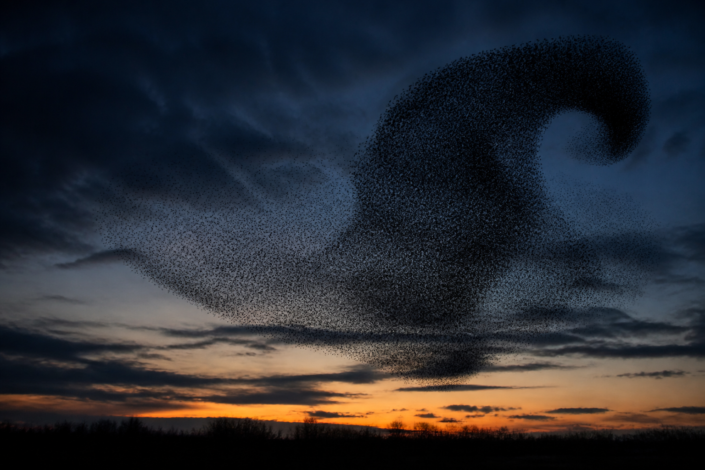

SUPER AI CAMP
超级AI营
Day 1 · 自然智慧与人类智力起源探索
重庆 · 武陵山
按方向键开始
每一只都只遵守 三条简单规则：别撞上同伴、跟着大家飞、别掉队。
没有谁在指挥。

没有钟表和日历的年代，古人靠北斗斗柄的指向定季节——指东是春天，指南是夏天。
中国人盯天盯出了二十四节气，精确到能告诉你哪一天该播种。
太平洋上的航海家不带任何仪器，靠星星升起的位置横渡几千公里。
你看别人怎么骑——他上车前踩了一下踏板
你猜：「是不是身体不能歪？」
上车。摔了。
你发现：要往快倒的那一边打把，不是反着打。
每叠一次，都有一个秒数。记住你第 1 次、第 5 次、第 20 次的成绩。
数你能连续接住几次。记住你第 1 次、第 5 次、第 20 次在想什么。
用语言描述一样东西。不能说出它的名字。描述得越准，对面画得越像。
只能照着描述画。不许提问。听到什么，就画什么。